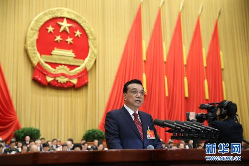

解读：李克强政府报告中的“互联网+”是什么
“互联网+”的提法是一个前所未有的高度，而“把一批新兴产业培育成主导产业”出现在总理政府工作报告中也是第一次。
“3月5日消息，第十二届全国人民代表大会第三次会议在人民大会堂举行开幕会。李克强总理提出制定“互联网+”行动计划。
“李克强在政府工作报告中提出，“制定‘互联网+’行动计划，推动移动互联网、云计算、大数据、物联网等与现代制造业结合，促进电子商务、工业互联网和互联网金融健康发展，引导互联网企业拓展国际市场。”
那么，什么是“互联网+”？
“互联网+”战略是全国人大代表、腾讯董事会主席兼CEO马化腾今年向人大提出的四个建议之一，马化腾解释说，“互联网+”战略就是利用互联网的平台，利用信息通信技术，把互联网和包括传统行业在内的各行各业结合起来，在新的领域创造一种新的生态。
简单地说就是“互联网+XX传统行业=互联网XX行业”，虽然实际的效果绝不是简单的相加。
这样的“互联网+”的例子绝不是什么新鲜事物，比如，传统集市+互联网有了淘宝，传统百货卖场+互联网有了京东，传统银行+互联网有了支付宝，传统的红娘+互联网有了世纪佳缘，传统交通+互联网有了快的滴滴，而传统新闻+互联网有了柴静《穹顶之下》病毒式的传播。
“互联网+”：是对传统产业不是颠覆，而是换代升级
在通信领域，互联网+通信有了即时通信，现在几乎人人都在用即时通信App进行语音、文字甚至视频交流。然而传统运营商在面对微信这类即时通信App诞生时简直如临大敌，因为语音和短信收入大幅下滑，但现在随着互联网的发展，来自数据流量业务的收入已经大大超过语音收入的下滑，可以看出，互联网的出现并没有彻底颠覆通信行业，反而是促进了运营商进行相关业务的变革升级。
在交通领域，过去没有移动互联网，车辆运输、运营市场不敢完全放开，有了移动互联网以后，过去的交通监管方法受到很大的挑战。从国外的Uber、Lyft到国内的滴滴、快的，移动互联网催生了一批打车拼车专车软件，虽然它们在全世界不同的地方仍存在不同的争议，但它们通过把移动互联网和传统的交通出行相结合，改善了人们出行的方式，增加了车辆的使用率，推动了互联网共享经济的发展，提高了效率、减少了排放，对环境保护也做出了贡献。
在金融领域，余额宝横空出世的时候，银行觉得不可控，也有人怀疑二维码支付存在安全隐患，但随着国家对互联网金融的研究也越来越透彻，银联对二维码支付也出了标准，互联网金融得到了较为有序的发展，也得到了国家相关政策的支持和鼓励。
在零售、电子商务等领域，过去这几年都可以看到和互联网的结合，正如马化腾所言，“它是对传统行业的升级换代，不是颠覆掉传统行业。”在其中，又可以看到“特别是移动互联网对原有的传统行业起到了很大的升级换代的作用。”
事实上，“互联网+”不仅正在全面应用到第三产业，形成了诸如互联网金融、互联网交通、互联网医疗、互联网教育等新生态，而且正在向第一和第二产业渗透。马化腾表示，工业互联网正在从消费品工业向装备制造和能源、新材料等工业领域渗透，全面推动传统工业生产方式的转变；农业互联网也在从电子商务等网络销售环节向生产领域渗透，为农业带来新的机遇，提供广阔发展空间。
“互联网＋”推动新兴产业地位升级
中关村下一代互联网产业联盟秘书长张建宁在接受采访时表示，“互联网+”的提法是一个前所未有的高度，而“把一批新兴产业培育成主导产业”出现在总理政府工作报告中也是第一次。
张建宁表示，进入“十二五”收官之年，政府此前已经明确提出几大战略性新兴产业，但更多的提法是“培育”，是一个从无到有的过程。但近两年，特别是随着移动互联网的加速发展，云计算、大数据、物联网等新技术更快融入到传统产业、包括金融理财、打车等民生领域；以及家电等传统制造业等等，PC互联网时代升级到移动互联网时代，互联网技术与两化融合相结合会有更多看点。
在他看来，经过“十二五”信息技术的基础打造，此次总理政府工作报告对于“互联网＋”战略的提出，正是站在这个新的战略高度，来看待信息技术和传统产业的“生态融合”的全新定位。
2015 © 河南祯祥智能工程有限公司. ALL Rights Reserved.